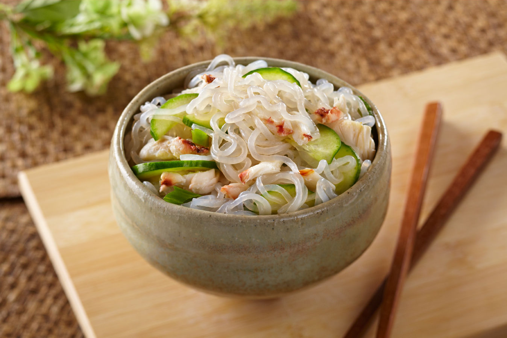

sunomono

Cucumber salad with vinegar dressing, often served with seafood.
ingredients
- 2 cucumbers,
- 1/4 cup rice vinegar,
- 2 tbsp sugar,
- 1/2 tsp salt,
- 2 tbsp sesame seeds.
instructions
- Thinly slice the cucumbers and sprinkle with salt.
- Let them sit for 5 minutes, then squeeze out the excess water.
- Mix the rice vinegar and sugar together to make the dressing.
- Toss the cucumbers in the dressing, and sprinkle with sesame seeds before serving.